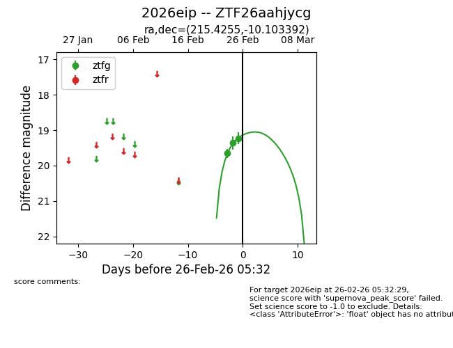
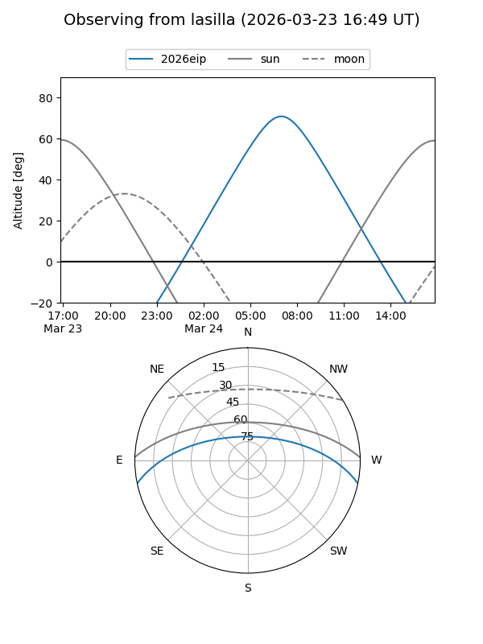
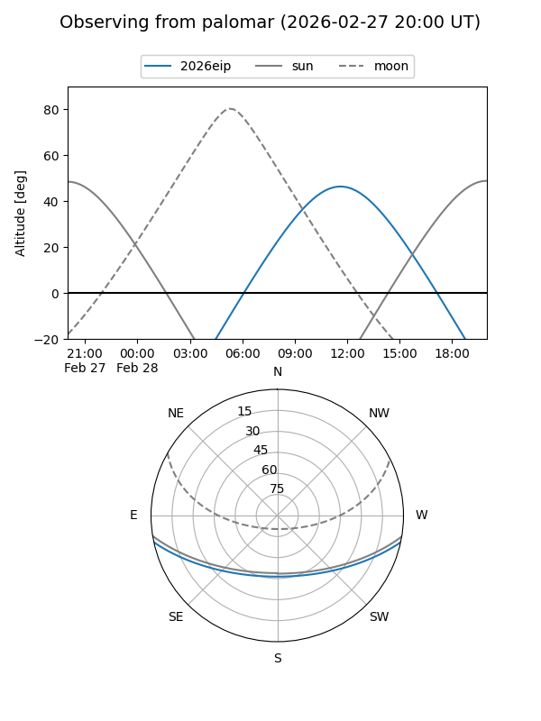
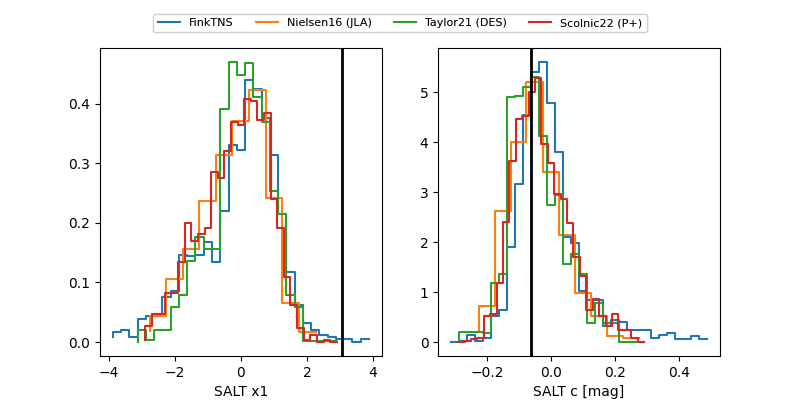

2026eip
Target 2026eip at 2026-02-26 05:33
Aliases and brokers:
FINK: link
Lasair: link
ALeRCE: link
TNS: link
YSE: link
alt names
ZTF26aahjycg (ztf,fink_ztf)
2026eip (tns,yse)
Coordinates:
equatorial (ra, dec) = 215.4255,-10.10339
equatorial (HMS+DMS) = 14:21:42.13,-10:06:12.21
galactic (l, b) = (336.4375,+46.81208)
Flags:
Photometry:
last ztfg=19.23
3 ztfg detections
Lightcurve

Visibility


Additional plots
